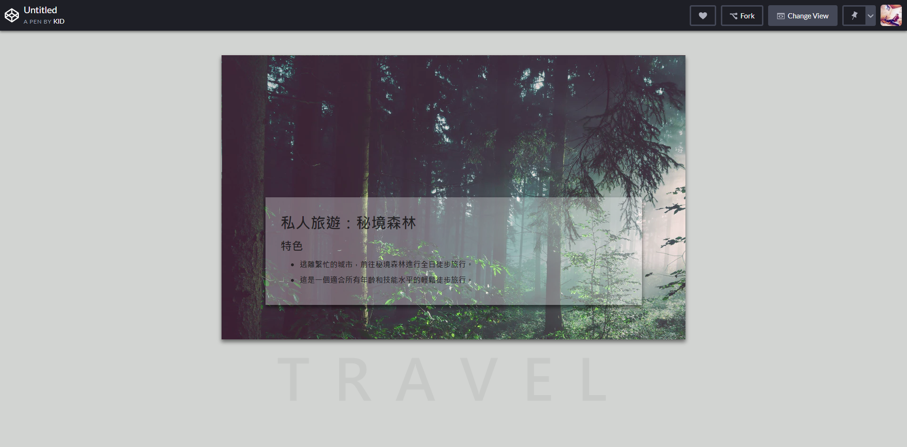

網頁設計 作業 - HTML 與 CSS 入門
1. 參考圖片

2. 練習步驟：
參考課堂練習個人頁面所使用的 CSS 技巧來練習。
請在 Codepen 開啟一個新的 Pen
參考圖片加入對應的元素
3. CSS 關鍵字：
背景圖片：background-image
※ 參考 W3School 文件 傳送門
4. 練習重點：
CSS 如何控制元素並進行排版。
5. 圖片素材：
Unsplash 找一張圖片按右鍵選取【複製圖片位置】